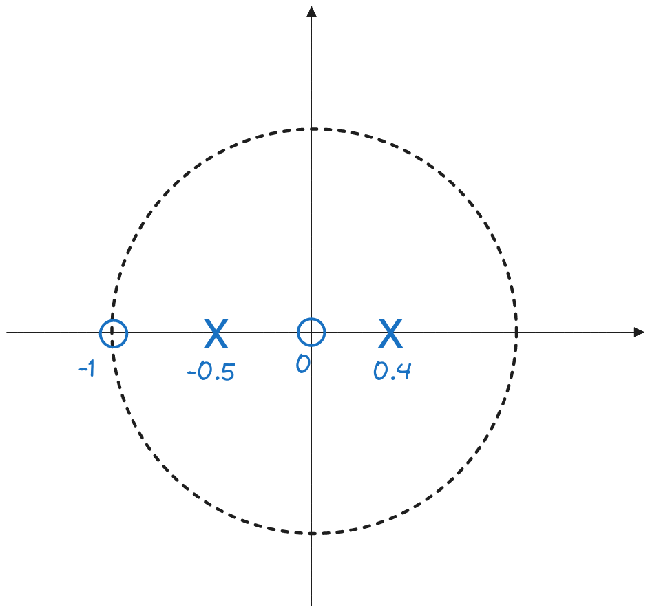
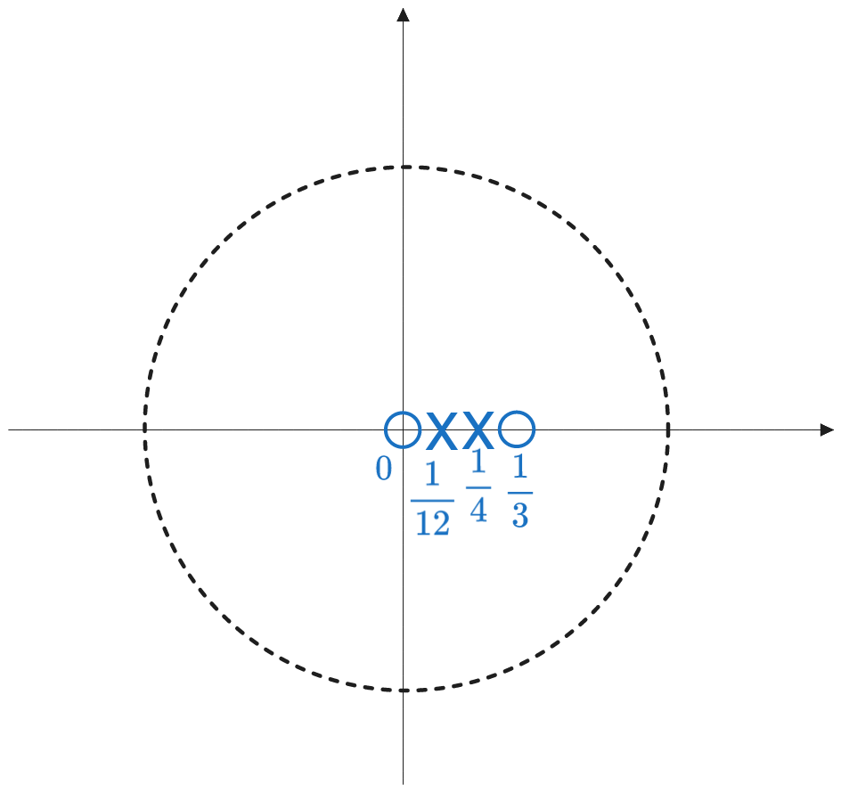

5 The Z Transform
\[ \newcommand{\underuparrow}[1]{\underset{\uparrow}{#1}}\] $$
5.1 Exercise 1
Compute the convolution of the signals: \(x_1[n] = \{ ...,0,1,2,\underuparrow{3},4,0,...\}\) and \(x_2[n] = \{...,0,2,\underuparrow{2},3,3,0,...\}\)
a). using the Z transform
b). as a product of polynomials
Solution
a). Using the Z transform
We can write the convolution as a product of the Z transforms of the two signals: \[x_1[n] \leftrightarrow X_1(z) = 1z^2 + 2z^1 + 3 + 4z^{-1}\] \[x_2[n] \leftrightarrow X_2(z) = 2z^1 + 2 + 3z^{-1} + 3z^{-2}\] \[\begin{aligned} x_1[n] \ast x_2[n] \leftrightarrow X_1 \cdot X_2(z) &= (1z^2 + 2z^1 + 3 + 4z^{-1}) \cdot (2z^1 + 2 + 3z^{-1} + 3z^{-2}) \\ &= 2z^3 + 6z^2 + 13z + 23 + 23z^{-1} + 21z^{-2} + 12z^{-3} \\ &= \{2, 6, 13, \underuparrow{23}, 23, 21, 12\} \\ \end{aligned} \]
b). As a product of polynomials
The Z transform is simply associating a polynomial to a signal, according to some rules (variable is \(z\), powers are in decreasing order). Convolution is a polynomial multiplication, irrespective of how we define the polynomials (like in Z transform, or in some other way).
We could also associate any polynomials and compute the convolution as a product of those polynomials. \[\{1, 2, 3, 4\} \rightarrow 1 + 2X + 3X^2 + 4X^3\] \[\{2, 2, 3, 3\} \rightarrow 2 + 2X + 3X^2 + 3X^3\] \[\begin{aligned} x_1[n] \ast x_2[n] &\rightarrow (1 + 2X + 3X^2 + 4X^3) \cdot (2 + 2X + 3X^2 + 3X^3) \\ &= 2 + 6X + 13X^2 + 23X^3 + 23X^4 + 21X^5 + 12X^6 \\ &= \{2, 6, 13, 23, 23, 21, 12\} \\ \end{aligned}\]
The origin of time is at the element containing the product of the two values at the origin of time in the two input signals, i.e. \(3X^2\) from \(x_1[n]\) and \(2X\) from \(x_2[n]\) is \(6X^3\), so it’s the element with \(X^3\) in the output signal.
5.2 Exercise 2
Find the Z transform of the following signals:
a). \[x[n] = \left( \frac{1}{3} \right)^n u[n]\]
b). \[x[n] = \begin{cases} \left( \frac{1}{3} \right)^n, & n \geq 0 \\ \left( \frac{1}{2} \right)^{-n}, & n < 0 \end{cases}\]
c). \[x[n] = \left( \frac{1}{2} \right)^n \sin (\frac{\pi}{3}n) u[n]\]
Solution
a). We use the definition of the Z transform: \[X(z) = \sum_{n=-\infty}^{\infty} x[n] z^{-n}\]
In our case, \(x[n] = \left( \frac{1}{3} \right)^n u[n]\), so it has only zeros on the left side, because of \(u[n]\). Therefore we only need to sum from \(n=0\) to \(\infty\): \[\begin{aligned} X(z) &= \sum_{n=0}^{\infty} x[n] z^{-n} \\ &= \sum_{n=0}^{\infty} \left( \frac{1}{3} \right)^n z^{-n} \\ &= \sum_{n=0}^{\infty} \left( \frac{1}{3z} \right)^n \\ \end{aligned}\]
Denoting \(q = \frac{1}{3z}\), we have here the sum of a geometric series: \[X(z) = \sum_{n=0}^{\infty} q^n = 1 + q + q^2 +...\]
It is known that the sum of a geometric series with element \(q\) is: \[\sum_{n=0}^{\infty} q^n = \frac{1}{1-q}\] if \(|q| < 1\). The sum in infinite otherwise (\(|q| \geq 1\)).
Therefore in our case, \(q = \frac{1}{3z}\), so if we have \(|\frac{1}{3z}| < 1\), the sum is: \[X(z) = \frac{1}{1-q} = \frac{1}{1-\frac{1}{3z}} = \frac{3z}{3z-1} = \frac{z}{z-\frac{1}{3}}\]
The condition \(|\frac{1}{3z}| < 1\) defines the Region of Convergence (ROC). We can more conveniently write it as: \[|\frac{1}{3z}| < 1 \rightarrow |z| > \frac{1}{3}\]
Therefore the answer is: \[X(z) = \frac{z}{z-\frac{1}{3}}, \quad \text{ROC:}|z| > \frac{1}{3}\]
b). We use the definition of the Z transform, but now we also have values on the left side of \(x[n]\). We split the sum in two parts: \[\begin{aligned} X(z) &= \sum_{n=-\infty}^{\infty} x[n] z^{-n} \\ &= \sum_{n=-\infty}^{-1} x[n] z^{-n} + \sum_{n=0}^{\infty} x[n] z^{-n} \\ &= \sum_{n=-\infty}^{-1} \left( \frac{1}{2} \right)^{-n} z^{-n} + \sum_{n=0}^{\infty} \left( \frac{1}{3} \right)^n z^{-n} \\ &= \sum_{n=-\infty}^{-1} \left( \frac{z}{2} \right)^{-n} + \sum_{n=0}^{\infty} \left( \frac{1}{3z} \right)^n \\ \end{aligned}\]
The second sum is similar to the one in the previous exercise, so it results in: \[\sum_{n=0}^{\infty} \left( \frac{1}{3z} \right)^n = \frac{z}{z-\frac{1}{3}} \quad \text{if} \quad |z| > \frac{1}{3}\]
The first sum is also a geometric series. First, we can do a variable change \(n = -m\), so that we have a sum from \(m=1\) to \(\infty\) instead: \[\sum_{n=-\infty}^{-1} \left( \frac{z}{2} \right)^{-n} = \sum_{m=1}^{\infty} \left( \frac{z}{2} \right)^{m}\]
This is a geometric series with element \(q = \frac{z}{2}\), but the first element \(q^0 = 1\) is missing, so we have to remove it from the sum: \[\begin{aligned} \sum_{m=1}^{\infty} \left( \frac{z}{2} \right)^{m} &= \sum_{m=0}^{\infty} \left( \frac{z}{2} \right)^{m} - 1 \\ &= \frac{1}{1-\frac{z}{2}} - 1 \\ &= \frac{1}{1-\frac{z}{2}} - \frac{1-\frac{z}{2}}{1-\frac{z}{2}} \\ &= \frac{\frac{z}{2}}{1-\frac{z}{2}} \\ &= - \frac{z}{z-2} \end{aligned}\]
The condition is \(|\frac{z}{2}| < 1\), which is equivalent to \(|z| < 2\).
Adding the two sums, we have: \[\begin{aligned} X(z) &= - \frac{z}{z-2} + \frac{z}{z-\frac{1}{3}} \\ &= \frac{-z(z-\frac{1}{3}) + z(z-2)}{(z-2)(z-\frac{1}{3})} \\ &= \frac{-\frac{5}{3}z}{(z-2)(z-\frac{1}{3})} \\ \end{aligned}\]
The ROC is the intersection of the ROCs of the two sums, which is: \[\text{ROC:} \quad |z| > \frac{1}{3} \quad \text{and} \quad |z| < 2\] \[\text{ROC:} \quad \frac{1}{3} < |z| < 2\]
c). We can write the \(\sin\) using the Euler formula: \[\sin(x) = \frac{e^{jx} - e^{-jx}}{2j}\] \[\sin (\frac{\pi}{3}n) = \frac{e^{j\frac{\pi}{3}n} - e^{-j\frac{\pi}{3}n}}{2j}\]
The \(u[n]\) cancels the left part of the signal, so the Z transform sum starts from 0: \[\begin{aligned} X(z) &= \sum_{n=0}^{\infty} \left( \frac{1}{2} \right)^n \frac{e^{j\frac{\pi}{3}n} - e^{-j\frac{\pi}{3}n}}{2j} z^{-n} \\ &= \frac{1}{2j} \sum_{n=0}^{\infty} \left( \frac{e^{j\frac{\pi}{3}}}{2z} \right)^n - \frac{1}{2j} \sum_{n=0}^{\infty} \left( \frac{e^{-j\frac{\pi}{3}}}{2z} \right)^n \\ \end{aligned}\] (since \(e^{j\frac{\pi}{3}n} = (e^{j\frac{\pi}{3}})^n\)).
From now on, we use the same geometric series formula: \[\frac{1}{2j} \sum_{n=0}^{\infty} \left( \frac{e^{j\frac{\pi}{3}}}{2z} \right)^n = \frac{1}{2j} \frac{1}{1 - q} = \frac{1}{2j} \frac{1}{1 - \frac{e^{j\frac{\pi}{3}}}{2z}}\] \[\frac{1}{2j} \sum_{n=0}^{\infty} \left( \frac{e^{-j\frac{\pi}{3}}}{2z} \right)^n = \frac{1}{2j} \frac{1}{1 - q} = \frac{1}{2j} \frac{1}{1 - \frac{e^{-j\frac{\pi}{3}}}{2z}}\] with the conditions \(|\frac{e^{j\frac{\pi}{3}}}{2z}| < 1\) and \(|\frac{e^{-j\frac{\pi}{3}}}{2z}| < 1\), which are equivalent to \(|z| > \frac{1}{2}\).
Adding the two sums, we have: \[\begin{aligned} X(z) &= \frac{1}{2j} \frac{1}{1 - \frac{e^{j\frac{\pi}{3}}}{2z}} - \frac{1}{2j} \frac{1}{1 - \frac{e^{-j\frac{\pi}{3}}}{2z}} \\ &= \frac{1}{2j} \frac{\frac{e^{j\frac{\pi}{3}} - e^{-j\frac{\pi}{3}}}{2z}}{(1 - \frac{e^{j\frac{\pi}{3}}}{2z})(1 - \frac{e^{-j\frac{\pi}{3}}}{2z})} \\ &= \frac{\frac{1}{2z}\sin(\frac{\pi}{3})}{(1 - \frac{e^{j\frac{\pi}{3}}}{2z})(1 - \frac{e^{-j\frac{\pi}{3}}}{2z})} \\ &= \frac{\sin(\frac{\pi}{3})}{(2z - e^{j\frac{\pi}{3}})(2z - e^{-j\frac{\pi}{3}})} \\ &= \frac{\sin(\frac{\pi}{3})}{4z^2 - 2ze^{j\frac{\pi}{3}} - 2ze^{-j\frac{\pi}{3}} + 1} \\ &= \frac{\sin(\frac{\pi}{3})}{4z^2 - 2z(e^{j\frac{\pi}{3}} + e^{-j\frac{\pi}{3}}) + 1} \\ &= \frac{\sin(\frac{\pi}{3})}{4z^2 - 2z(2\cos(\frac{\pi}{3})) + 1} \\ &= \frac{\sin(\frac{\pi}{3})}{4z^2 - 4\cos(\frac{\pi}{3})z + 1} \\ &= \frac{\frac{\sqrt{3}}{2}}{4z^2 - 2z + 1} \\ &= \frac{\sqrt{3}}{8} \frac{1}{z^2 - \frac{1}{2}z + \frac{1}{4}} \\ \end{aligned}\] \[\text{ROC:} \quad |z| > \frac{1}{2}\]
5.3 Exercise 3
Find all the signals \(x[n]\) which have the Z transform \[X(z) = \frac{7}{(1 - 2z^{-1})(1+0.5z^{-1})}\]
Solution
Because we don’t specify the ROC, we will have multiple signals which have the same expression of the Z transform, but with different ROCs.
We find the inverse Z transform by using the partial fraction expansion.
First we get rid of the negative powers of \(z\), to make calculations easier: \[X(z) = \frac{7}{(1 - 2z^{-1})(1+0.5z^{-1})} = \frac{7z^2}{(z - 2)(z+0.5)}\]
Then we write \(X(z)/z\): \[\frac{X(z)}{z} = \frac{7z}{(z - 2)(z+0.5)}\]
Then we write the partial fractions: \[\frac{X(z)}{z} = \frac{7z}{(z - 2)(z+0.5)} = \frac{A}{z-2} + \frac{B}{z+0.5}\]
We can find \(A\) and \(B\) now, or leave them for later. \[A = \frac{7z}{z+0.5} \Big|_{z=2} = \frac{7 \cdot 2}{2 + 0.5} = \frac{14}{2.5}\] \[B = \frac{7z}{z-2} \Big|_{z=-0.5} = \frac{7 \cdot (-0.5)}{-0.5 - 2} = \frac{-3.5}{-2.5}\]
Next we multiply back with \(z\): \[X(z) = A \frac{z}{z-2} + B \frac{z}{z+0.5}\]
Now we use the inverse Z transform table to invert the partial fractions: \[\begin{aligned} a^n u[n] &\leftrightarrow \frac{z}{z-a}, \text{ for } |z| > |a| \\ -a^n u[-n-1] &\leftrightarrow \frac{z}{z-a}, \text{ for } |z| < |a| \\ \end{aligned}\]
Because the ROC is not specified, we will have multiple possible signals for each of the partial fractions.
Case 1: if \(|z| < 0.5 < 2\), we use the variant with \(u[-n-1]\) for both fractions: \[\begin{aligned} \frac{z}{z-2} &\leftrightarrow -2^n u[-n-1] \\ \frac{z}{z+0.5} &\leftrightarrow -(-0.5)^n u[-n-1] \end{aligned}\] Therefore the signal is: \[x_1[n] = - \frac{14}{2.5} 2^n u[-n-1] - \frac{3.5}{2.5} (-0.5)^n u[-n-1]\]
Case 2: if \(0.5 < |z| < 2\), we use the variant with \(u[n]\) for the fraction with \(0.5\) and \(u[-n-1]\) for the fraction with \(2\): \[\begin{aligned} \frac{z}{z-2} &\leftrightarrow -2^n u[-n-1] \\ \frac{z}{z+0.5} &\leftrightarrow (-0.5)^n u[n] \end{aligned}\] Therefore the signal is: \[x_2[n] = - \frac{14}{2.5} 2^n u[-n-1] + \frac{3.5}{2.5} (-0.5)^n u[n]\]
Case 3: if \(|z| > 2 > 0.5\), we use the variant with \(u[n]\) for both fractions: \[\begin{aligned} \frac{z}{z-2} &\leftrightarrow 2^n u[n] \\ \frac{z}{z+0.5} &\leftrightarrow (-0.5)^n u[n] \end{aligned}\] Therefore the signal is: \[x_3[n] = \frac{14}{2.5} 2^n u[n] + \frac{3.5}{2.5} (-0.5)^n u[n]\]
5.4 Exercise 4
Consider the system with the following system equation: \[y[n] = -0.1 y[n-1] + 0.2 y[n-2] + x[n] + x[n-1]\]
- a). Find the system function H(z), draw the pole-zero diagram, and specify if the system is stable
- b). Compute the impulse response \(h[n]\) of the system
- c). Compute the response of the system to the unit step \(x[n] = u[n]\)
- d). Compute the response of the system to the input signal \(x[n] = \left(\frac{1}{3}\right)^n u[n]\)
Solution
a). Find the system function H(z), draw the pole-zero diagram, and specify if the system is stable
We can find H(z) by taking the Z transform of the system equation: \[\begin{aligned} Y(z) &= -0.1 z^{-1} Y(z) + 0.2 z^{-2} Y(z) + X(z) + z^{-1} X(z) \\ Y(z) (1 + 0.1 z^{-1} - 0.2 z^{-2}) &= X(z) (1 + z^{-1}) \\ H(z) = \frac{Y(z)}{X(z)} &= \frac{1 + z^{-1}}{1 + 0.1 z^{-1} - 0.2 z^{-2}} \\ &= \frac{z(z + 1)}{z^2 + 0.1 z - 0.2} \\ \end{aligned}\]
The coefficients of \(x[n-k]\) are the coefficients \(b_k\) at the numerator of \(H(z)\). Here, they are \(b_0 = 1\) and \(b_1 = 1\).
The coefficients of \(y[n-k]\) are the coefficients \(a_k\) at the denominator of \(H(z)\), with the opposite sign. Here, they are \(a_1 = 0.1\) and \(a_2 = -0.2\) (note the different sign from how they appear in the equation).
Therefore \(H(z)\) is: \[H(z) = \frac{1 + z^{-1}}{1 + 0.1 z^{-1} - 0.2 z^{-2}}\]
Find the zeros as the roots of the numerator polynomial: \[z(z + 1) = 0 \rightarrow z_1 = 0, \quad z_2 = -1\] Find the poles as the roots of the denominator polynomial: \[z^2 + 0.1 z^ - 0.2 = 0 \rightarrow p_1 = -0.5, \quad p_2 = 0.4\]
The pole-zero diagram is:

The system is stable, because:
- The system is causal, because the system equation is causal (no \(y[n+k]\) or \(x[n+k]\) terms).
- A causal system is stable if all the poles are inside the unit circle. In our case, the poles are \(p_1 = -0.5\) and \(p_2 = 0.4\), so they are indeed inside the unit circle.
b). Compute the impulse response \(h[n]\) of the system
The impulse response \(h[n]\) is the inverse Z transform of the system function \(H(z)\). We use the same method for inverting the Z transform with partial fractions as in a previous exercise.
We start from the expression of \(H(z)\), with positive exponents: \[H(z) = \frac{z(z + 1)}{z^2 + 0.1 z - 0.2}= \frac{z(z+1)}{(z+0.5)(z-0.4)}\] Then we write \(H(z)/z\): Write \(H(z)/z\): \[\frac{H(z)}{z} = \frac{z + 1}{(z+0.5)(z-0.4)}\] Then decompose in partial fractions: \[\frac{H(z)}{z} = \frac{z + 1}{(z+0.5)(z-0.4)} = \frac{A}{z+0.5} + \frac{B}{z-0.4}\] Multiply back with \(z\): \[H(z) = A \frac{z}{z+0.5} + B \frac{z}{z-0.4}\]
We know the system is causal, so we know \(h[n]\) must be causal, so we invert the fractions using the variant with \(u[n]\) for both: \[\begin{aligned} \frac{z}{z+0.5} &\leftrightarrow (-0.5)^n u[n] \\ \frac{z}{z-0.4} &\leftrightarrow (0.4)^n u[n] \end{aligned}\]
The result is: \[h[n] = A (-0.5)^n u[n] + B (0.4)^n u[n]\] where \(A\) and \(B\) are: \[A = \frac{z+1}{z-0.4} \Big|_{z=-0.5} = \frac{-0.5+1}{-0.5-0.4} = \frac{0.5}{-0.9}\] \[B = \frac{z+1}{z+0.5} \Big|_{z=0.4} = \frac{0.4+1}{0.4+0.5} = \frac{1.4}{0.9}\]
c). Compute the response of the system to the unit step \(x[n] = u[n]\)
If the system function is \(H(z)\), and the input has the Z transform \(X(z)\), then the output Z transform is: \[Y(z) = H(z) X(z)\]
In our case, the input is \(x[n] = u[n]\), so its Z transform is: \[X(z) = \frac{1}{1 - z^{-1}} = \frac{z}{z-1}, \quad \text{ROC:} \quad |z| > 1\]
Therefore: \[\begin{aligned} Y(z) &= H(z) X(z) \\ &= \frac{z(z+1)}{(z+0.5)(z-0.4)} \cdot \frac{z}{z-1} \\ &= \frac{z^2(z+1)}{(z+0.5)(z-0.4)(z-1)} \\ \end{aligned}\]
Now we use the same inverse Z procedure as in the previous exercises.
Write \(Y(z)/z\), then decompose in partial fractions: \[\frac{Y(z)}{z} = \frac{z(z+1)}{(z+0.5)(z-0.4)(z-1)} = \frac{A}{z+0.5} + \frac{B}{z-0.4} + \frac{C}{z-1}\] Multiply back with \(z\): \[Y(z) = A \frac{z}{z+0.5} + B \frac{z}{z-0.4} + C \frac{z}{z-1}\]
The system is causal, the input is causal (\(u[n]\)), so the output must be causal, so we invert using the variant with \(u[n]\) for all fractions: \[y[n] = A (-0.5)^n u[n] + B (0.4)^n u[n] + C u[n]\] where \(A\), \(B\) and \(C\) are: \[A = \frac{z(z+1)}{(z-0.4)(z-1)} \Big|_{z=-0.5} = \frac{-0.5(-0.5+1)}{(-0.5-0.4)(-0.5-1)} = ...\] \[B = \frac{z(z+1)}{(z+0.5)(z-1)} \Big|_{z=0.4} = \frac{0.4(0.4+1)}{(0.4+0.5)(0.4-1)} = ...\] \[C = \frac{z(z+1)}{(z+0.5)(z-0.4)} \Big|_{z=1} = \frac{1(1+1)}{(1+0.5)(1-0.4)} = ...\] and the ROC is the intersection of the ROCs of the three fractions, which is: \[\text{ROC:} \quad |z| > |-0.5| \quad \text{and} \quad |z| > |0.4| \quad \text{and} \quad |z| > |1|\] which means: \[\text{ROC:} \quad |z| > 1\]
d). Compute the response of the system to the input signal \(x[n] = \left(\frac{1}{3}\right)^n u[n]\)
The Z tranform of the input is: \[X(z) = \frac{1}{1 - \frac{1}{3} z^{-1}} = \frac{z}{z-\frac{1}{3}}, \quad \text{ROC:} \quad |z| > \frac{1}{3}\]
We solve in the same manner as in c).
5.5 Exercise 5
A causal LTI system has the property that if the input signal is \[x[n] = \left( \frac{1}{3} \right)^n u[n] - \frac{1}{4} \left( \frac{1}{3} \right)^n u[n-1],\] then the output signal is \[y[n] = \left( \frac{1}{4} \right)^n u[n]\]
a). Find the system function H(z), draw the pole-zero diagram
b). Compute the impulse response \(h[n]\) of the system
c). Find the difference equation of the system
d). Characterize the system with respect to:
- length of impulse response (FIR or IIR)
- implementation (recursive or non-recursive)
- stability
Solution
a). Find the system function H(z), draw the pole-zero diagram
We know that \(H(z) = \frac{Y(z)}{X(z)}\). We find \(X(z)\) and \(Y(z)\), then we divide them to obtain \(H(z)\).
For the Z transform of the input, we take each term: \[\left(\frac{1}{3}\right)^n u[n] \leftrightarrow \frac{z}{z-\frac{1}{3}}, \quad \text{ROC:} \quad |z| > \frac{1}{3}\] For the second term, observe that we can write it as: \[\frac{1}{4} \left( \frac{1}{3} \right)^n u[n-1] = \frac{1}{4} \cdot \frac{1}{3} \cdot \left( \frac{1}{3} \right)^{n-1} u[n-1]\] and \(\left( \frac{1}{3} \right)^{n-1} u[n-1]\) is the shifted version of \(\left( \frac{1}{3} \right)^n u[n]\), so its Z transform is multiplied by \(z^{-1}\): \[\left( \frac{1}{3} \right)^{n-1} u[n-1] \leftrightarrow z^{-1} \frac{z}{z-\frac{1}{3}}, \quad \text{ROC:} \quad |z| > \frac{1}{3}\] Therefore the second term has the Z transform: \[\frac{1}{4} \left( \frac{1}{3} \right)^n u[n-1] \leftrightarrow \frac{1}{12} \cdot \frac{1}{z-\frac{1}{3}}, \quad \text{ROC:} \quad |z| > \frac{1}{3}\] and the Z transform of the whole input \(x[n]\) is: \[X(z) = \frac{z}{z-\frac{1}{3}} - \frac{1}{12} \cdot \frac{1}{z-\frac{1}{3}} = \frac{z-\frac{1}{12}}{z-\frac{1}{3}}, \quad \text{ROC:} \quad |z| > \frac{1}{3}\]
The Z transform of the output is: \[Y(z) = \frac{z}{z-\frac{1}{4}}, \quad \text{ROC:} \quad |z| > \frac{1}{4}\]
Therefore the system function is the ratio of the two, and the ROC is the intersection of the ROCs of the two: \[\begin{aligned} H(z) = \frac{Y(z)}{X(z)} &= \frac{z}{z-\frac{1}{4}} \cdot \frac{z-\frac{1}{3}}{z-\frac{1}{12}}, \quad \text{ROC:} \quad |z| > \frac{1}{3} \quad \text{and} \quad |z| > \frac{1}{4}\\ &= \frac{z (z-\frac{1}{3})}{(z-\frac{1}{4})(z-\frac{1}{12})}, \quad \text{ROC:} \quad |z| > \frac{1}{3}\\ \end{aligned}\]
The zeros are the roots of the numerator polynomial, i.e. \(z_1 = 0\) and \(z_2 = \frac{1}{3}\).
The poles are the roots of the denominator polynomial, i.e. \(p_1 = \frac{1}{4}\) and \(p_2 = \frac{1}{12}\).
The pole-zero diagram is:

b). Compute the impulse response \(h[n]\) of the system
We compute \(h[n]\) as the inverse Z transform of \(H(z)\), using the same method as in the previous exercises.
The system is causal (it is mentioend in the text, and also because the ROC is the outside of a circle), so \(h[n]\) must be causal, which means we invert the fractions using the variant with \(u[n]\) for all fractions.
c). Find the difference equation of the system
We disband the parantheses in \(H(z)\) and simplify to obtain negative exponents: \[\begin{aligned} H(z) &= \frac{z (z-\frac{1}{3})}{(z-\frac{1}{4})(z-\frac{1}{12})} \\ &= \frac{z^2 - \frac{1}{3}z}{z^2 - \frac{4}{12}z + \frac{1}{48}}\\ &= \frac{1 - \frac{1}{3}z^{-1}}{1 - \frac{1}{3}z^{-1} + \frac{1}{48}z^{-2}} \end{aligned}\]
We can write the system equation directly, knowing that the numerator coefficients are the coefficients of \(x[n-k]\) and the denominator coefficients, with the opposite sign, are the coefficients of \(y[n-k]\): \[y[n] = \frac{1}{3} y[n-1] - \frac{1}{48} y[n-2] + x[n] - \frac{1}{3} x[n-1]\]
We could also take the long route to the same result: \[H(z) = \frac{1 - \frac{1}{3}z^{-1}}{1 - \frac{1}{3}z^{-1} + \frac{1}{48}z^{-2}} = \frac{Y(z)}{X(z)}\] \[Y(z) (1 - \frac{1}{3}z^{-1} + \frac{1}{48}z^{-2}) = X(z) (1 - \frac{1}{3}z^{-1})\] \[y[n] - \frac{1}{3} y[n-1] + \frac{1}{48} y[n-2] = x[n] - \frac{1}{3} x[n-1]\] \[y[n] = \frac{1}{3} y[n-1] - \frac{1}{48} y[n-2] + x[n] - \frac{1}{3} x[n-1]\]
d). Characterize the system with respect to those three properties
Since the system function \(H(z)\) has a denominator (has poles), it is an IIR system, so the length of the impulse response is infinite.
We can also see from the expression of \(h[n]\) which we obtained in b).
The system is recursive, because it has a feedback loop (\(y[n]\) depends on \(y[n-1]\) and \(y[n-2]\) in the equation).
Any IIR system is recursive.
The system is stable, because:
- it is causal
- the poles are inside the unit circle (\(p_1 = \frac{1}{4}\), \(p_2 = \frac{1}{12}\)).